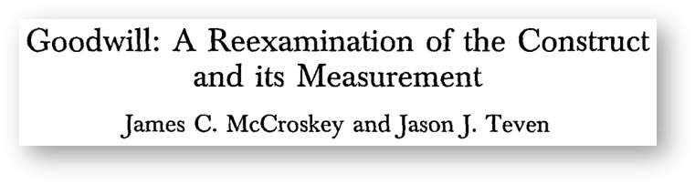

| ≥ 0.90 | Excellent |
| 0.80 - 0.90 | Good |
| 0.70 - 0.80 | Respectable |
| 0.65 - 0.70 | Minimally acceptable |
| 0.60 - 0.65 | Undesirable |
| ≤ 0.60 | Unacceptable |
Reliability and Validity
Week 7
- Extra credit opportunity: Take the survey (link in Announcement on Canvas)
- Reliability
- Statistical ways to examine reliability
- Improving reliability
- Validity
- Types/Approaches to validity
- Measurement problems related to reliability and validity
Criteria of Measurement Quality
How do we judge success / failure for measuring concepts?
- reliability
- validity
- consistency of measurement
- confidence in measures
Reliability
- refers to whether a measure produces stable, consistent measurement
- analogous to precision
- if you measure multiple times, values should not change
Scalar reliability
- reliability of research scales
- most commonly assessed
Scalar Reliability: An Example
On the scale below, please indicate your feelings about “Higher Education.”
Statistical Ways to Examine Reliability
- Test-retest reliability
- Alternate forms reliability
- Average inter-item reliability
- Split-half reliability
- Cronbach’s alpha (\(\alpha\))
Test-Retest Reliability
Assessing consistency over time
- use the test-retest method with the same respondents
- compare responses to the same measure at \(t_1\) and \(t_2\)
- good reliability coefficient is between ~0.7 and 0.9
Alternate Forms Reliability
Also assessing consistency over time
- use the test-retest method with the same respondents
- compare responses to the different measure at \(t_1\) and \(t_2\)
- good reliability coefficient will be slightly lower than test-retest method
Assessing inter-item reliability

- Average inter-item reliability
- Split-half reliability
- Cronbach’s alpha (\(\alpha\))
Average Inter-item Reliability
Split-half Reliability
Cronbach’s alpha (\(\alpha\))
Interpreting Reliability
Increasing Reliability
Item construction
- concept explication!
Length of instrument
- reliability is associated with the number of items you have measuring a specific concept in the measurement instrument
- more is generally better
Administration of test
- standard conditions
- clear, consistent instructions
How to Achieve High Reliability and Validity
Concept explication!
- thorough meaning analysis
- good conceptual and operational definitions
Remember that…
- conceptual definitions = meaning of concepts
- operational definitions = how concepts are measured
Week 7
- Extra credit opportunity: Take the survey (link in Announcement on Canvas)
- Reliability
- Statistical ways to examine reliability
- Improving reliability
- Validity
- Types/Approaches to validity
- Measurement problems related to reliability and validity
Validity
- degree to which the instrument measures what it is intended to measure
- is the instrument measuring what we want it to?
- analogous to accuracy
- also extends to…
- precision in design (internal validity)
- ability to generalize (external validity)
An Analogy: Reliable? Valid?
An Analogy: Reliable? Valid?
Does One Rely on the Other?
Necessary or Sufficient Condition?
Reliability is a necessary condition for validity.
Reliability is not a sufficient condition for validity.
Validity
- degree to which the instrument measures what it is intended to measure
- is the instrument measuring what we want it to?
- analogous to accuracy
- also extends to…
- precision in design (internal validity)
- ability to generalize (external validity)
Types of External Validity
Before data collection
- Face or content validity
After data collection
- Criterion validity
- Construct validity
1. Face or Content Validity
“On its face”
- subjective validity judgment
- reasonable measure of the concept?
- exhaustive?
2. Criterion Validity
Extent to which a new measure can accurately predict a well-accepted (external) criterion
Does measure relate to some external criterion?
- empirical evidence to test validity
- e.g., student success in college and SAT/ACT scores
3 sub-types
- predictive
- concurrent
- retrospective
3. Construct Validity
All constructs are a result of theoretical development
- impacts inferences
- validity test of the theoretical construct itself
3 common ways of measuring construct validity
- relying on theory
- measuring known groups
- factorial validity
3a. Relying on theory
Theory: People who prefer sweet over tart flavors should show attitudinal preference for sweet fruit.
Hypothesis: People who prefer honey crisp over Granny Smith apples should score higher on an instrument that measures preference for sweet fruit.
Experiment: Measure preference for sweet fruit among 2 groups of people.
- Group A = people who prefer honey crisp apples
- Group B = people who prefer Granny Smith apples
- Instrument: “I prefer sweet apples.”
- “Strongly disagree” (1) to “Strongly agree” (7)
Scores should be higher among respondents in Group A.
3b. Measuring known groups
Less confounding with theory
Example: Developing a measure of racial tolerance
- National Association for the Advancement of Colored People (NAACP)
- Ku Klux Klan (KKK)
If measure of racial intolerance is reasonably valid, what should the scores look like?
Should observe large difference in scores between respondents associated with NAACP vs. those associated with KKK
3c. Factorial validity
This approach is based on a statistical technique called factor analysis
- tells us how many groups of items (factors) there are in an instrument

Below are several oppositely worded adjective pairs that represent how you may feel about the U.S. President. Circle the number between the adjectives which best represents your feelings (Fig 7.3 in textbook).

Threats to Validity
Poor concept explication
Social threats to validity
Reliability & Validity: Summary
Problems with Measurement
Faking responses
- deliberate attempt to alter results
- acquiescence: cooperating with the researcher
- social desirability: responses that are acceptable
- screw-you effect: opposite of acquiescence
Poor measurement items
- solution: identify them, throw them out, develop better items
Social Threats to Validity
Hypothesis guessing
Evaluation apprehension
Experimenter expectancies
Social desirability bias